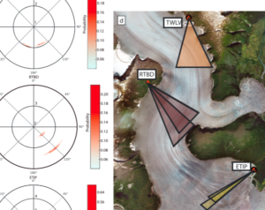
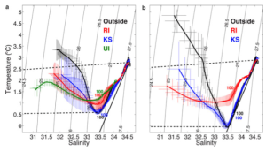
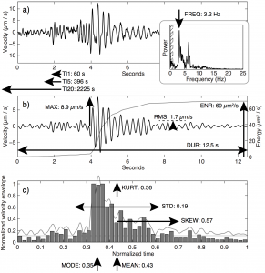
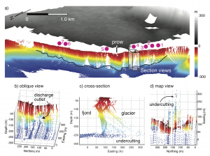
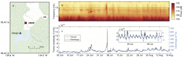
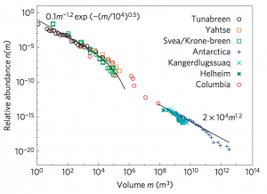
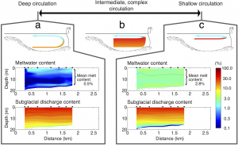
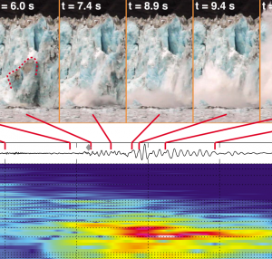
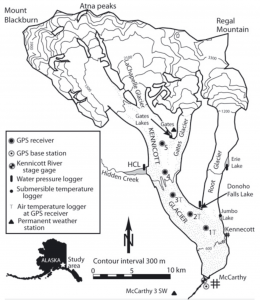

Publications
Selected highlights

2019 JGR: Seismology reveals the structure of subglacial conduits
Meltwater from the surface of glaciers flows towards the glacier terminus at the glacier bed, either slowly through sediment or discrete pockets of water distributed over the glacier bed, or quickly through several-meter-scale large tunnels. The pattern of this drainage, its configuration, and its location are important as they dictate the speed at which glaciers flow and how glaciers erode the landscape. However, these features of glacier beds are notoriously difficult to observe and are therefore poorly understood.
By using seismic data recorded adjacent to a glacier in Alaska, University of Idaho graduate student Margot Vore, Tim Bartholomaus, and others found that we were able to identify both the evolution of subglacial conduits, and also whether subglacial water flowed through a single conduit (as has traditionally been expected) or through multiple conduits. We found that, as the subglacial water approached the terminus, the pressure gradient driving efficient water flow reduced, and the conduits branched. Vore was able to identify a specific spectral signature of each conduit within the seismic data.
The complete article is available here.

2016 Annals: Adjacent glaciers and fjords respond differently to identical surface melt
Glaciologists and oceanographers often attempt to map out the response of glaciers and fjords to water input. In essence, they try to create a function that allows for the prediction of glacier and fjord dynamics under different weather and climate scenarios. In this paper, through close study of neighboring glaciers and fjords in West Greenland, we find that the three glaciological and oceanographic systems have entirely distinct behaviors. Given a uniform amount of melt at the ice sheet surface, some glaciers speed up while other glaciers slow down. Subglacial discharge in one fjord transits the fjord at 150 m, while it is found at the surface in another. We find that glacier and fjord geometry are critical at defining these relationships. When working to understand the behavior of glaciers and fjords, their specific shapes (especially depths) must be taking into account.
The article is available here.

2015 JGR: Icequakes reveal calving periodicity
We quantitatively relate the sizes of icebergs to the properties of the icequakes they produce. Then, using 18 months of seismic recordings (~350,000 calving icequakes), we examine variations in calving flux. Iceberg calving rates vary seasonally based on rates of submarine melt, and on hourly/daily timescales based on tidal stage.
The article is available here.

2015 GRL: Small amounts of subglacial discharge drive large amounts of submarine melt
In this paper, led by graduate student Mason Fried, we show that 80% of the terminus of a tidewater glacier in Greenland is undercut by submarine melt. This paper provides some of the first direct evidence that melting by warm ocean water exerts a significant impact on the frontal mass balance of Greenland tidewater glaciers. Furthermore, submarine melt away from the largest subglacial discharge conduits can drive submarine melt rates of over 3 m/d and, in aggregate, exceeds the flux of ice melted near the largest conduit mouths. These large rates of submarine melt, in the absence of vigorous subglacial discharge, are not predicted by present fjord circulation models.
The article is available here.

2015 GRL: Glaciohydraulic tremor reveals the seasonal evolution of subglacial discharge
The amplitude of background seismic noise varies with the amount of subglacial discharge at glaciers in Alaska and Greenland. We find that subglacial discharge efficiency increases at a tidewater glacier, over the course of the summer. Glaciohydraulic tremor observations represent the first tool to quantitatively assess variations in subglacial discharge from tidewater glaciers.
The article is available here.

2014 Nat. Geosci.: Iceberg calving is a self-organized critical process
An unprecedentedly complete compilation of observations from Svalbard, Alaska, Greenland, and Antarctica reveal that calving event volumes and inter-event times follow power-law distributions. Further analytical and numerical analyses reveal that iceberg calving is a self-organized critical process, indicating that calving rates can vary over orders of magnitude in response to only small variations in environmental forcings, such as sea level or air temperature.
The article is available here.

2013 EPSL: Submarine terminus melt can pace iceberg calving
Oceanographic measurements in Icy Bay, Alaska, reveal that warm ocean water can control rates of iceberg calving at Yahtse Glacier. We find that water >10 degrees C can reach within 1.5 km of the glacier terminus, essentially unaltered from that found in the open Gulf of Alaska. In the late summer and fall, when vigorous subglacial discharge flows into warm ocean water, submarine melting can undercut the glacier terminus at more than half the rate at which ice flows into the terminus. Thus, submarine melt can control iceberg calving, without regard to the internal stress field within the glacier terminus.
The article is available here.

2012 JGR: Calving icequakes are produced during and following iceberg impacts on the sea
Calving icequakes are recorded over 100 km from the termini of tidewater glaciers, all the world over. We show that the spectra of these events (recorded nearly once per minute) are distinct from tectonic earthquakes. By synchronizing video with locally-recorded seismic signals, we demonstrate that these icequakes are produced through the interaction between icebergs and the sea. Peak icequake amplitudes are produced seconds after the icebergs impact the sea, and coincide with the cavitation events beneath sea level. These results are supported by a model of the forces acting on decelerating icebergs following impact with the sea.
The article is available here.

2011 J. Glac.: A validated model for the role of englacial water storage on basal motion
We present 100 days of glacier motion and glacier hydrology data collected during the summer at Kennicott Glacier, Alaska. A numerical model, motivated by these data and presented in concept in our 2008 Nature Geoscience paper, reproduces the salient features of our field data, including the basal motion response to diurnal water supply and a jökulhlaup. Our model allows us to demonstrate the importance of englacial water storage and places constraints on the nature of sliding laws.
The article is available here.

2008 Nat. Geosci.: Changes in water storage control glacier motion
We find that when water is added to glacier systems faster than it drains out, basal water pressures and rates of basal motion increase. Our study, based at Kennicott Glacier, Alaska, revealed the importance of unsteadiness in water supply and water transmission through glaciers.
The article is available here.